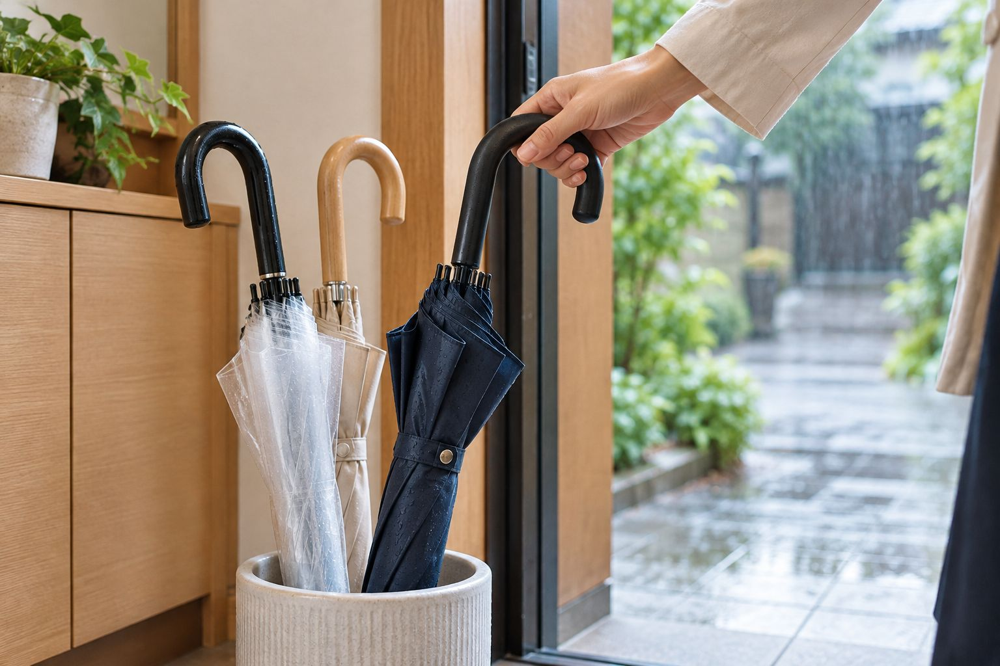

アクセサリー
稼いでいる人に
共通すること5選
共通
同じ
いま
「頑張っているのに、
思ったほど利益が出ない」
思

教材
落札
結果
同じ
月利100万円の人がいます。
まだ稼げていない人もいます。
まだ
初
一方で、
ノウハウ
※
考え
同じように学んでいるのに、
何が違うのか 。
何
その
違いは、考え方です。
ノウハウ
差
今日
稼いでいる人に共通すること、この5つ。
5
迷
等価交換の法則
基準値を上げる
自責思考
習慣化
アウトプット
今日
5
5
1
5
等価交換の法則
「
①
大きな結果が欲しいなら、
見合った代償を先に差し出す。
見合
「種 を まい てい ない の に、 収穫 できる こと は ありま せん」
時間
入札
お金
仕入れ
楽しみ
テレビ
①
欲しい月利の分だけ、
先に入札の時間を差し出す。
先に
利益が出てから、時間を増やす
いつ
先に時間を出して、入札の数を増やす
数
今週、
2
5
基準値を上げる
「
②
「今日はたくさんやった」の
たくさんが、人によって違う。
たくさん
「1 日 3 時間 や って、 今日 は たくさん 勉強 した と 思う 人 と、 10 時間 や って、 まだ 足 り ない と 思う 人。 結果 を 出す の は 後者 です」
最初
少し
②
稼いでいる人の日報を見て、
自分の当たり前を合わせる。
自分
入札の数
1
相場を見る数
売り切れ
質問の数
迷
オープン
3
5
自責思考
「
③
雨のせいにしても、
濡れて帰るだけです。
濡れ

「天気 予報 を 見 れ ば よ か っ た、 傘 を 持 って く れ ば よ か っ た。 そう 考える 人 が、 結果 を 出し ます」
人のせい
そこで
自分のせい
次に
自分
③
「落札できなかった」を、
自分の言葉に言い換える。
自分
ライバル
入札
相場
売り切れ
時間
入札
今日
4
5
習慣化
「
④
いちばん重いのは、
動き出す最初だけです。
動き出す
「止 ま って いる もの を 動かす とき に、 いちばん エネルギー が 要 り ます。 一度 動き 出 せ ば、 小さな 力 で 進 んで いき ます」
最初の1か月がいちばん重い
ここ
ハードルは低く
毎日
動き出したら、止めない
大きな
④
毎日の5分を決めて、
同じ時間にやる。
同じ
売り切れを3件見る
相場
入札を1件入れる
落ち
日報を1行書く
今日
明日
5
5
アウトプット
「
 19 / 25
19 / 25⑤
順番は、アウトプットが先。
つまずいた所だけ、学ぶ。
つ
「レシピ 本 を 100 冊 読む より、 1 回 キッチン に 立 って 卵 を 割る 方 が、 学 べ ます」
全部見て、覚えてから、やる
いつ
まずやって、つまずいた所だけ見る
身
⑤
アクセサリーで言うと、
この3つです。
この
入札する
教材
日報を書く
今日
オープンチャットで教える
人
今日
まとめ
今日覚えてほしいのはこの5つ 。
等価交換の法則
「
基準値を上げる
「
自責思考
「
習慣化
「
アウトプット
「
今週
5つ全部は、今週やらなくて大丈夫です。
入札
稼
毎日
でき
今
「1回だまされたと思って、聞いてください」
今日
5
オープン
感想
今日の手順
5
自分
オープン
結果を出している人は、
この5つを徹底している人です。
この
今日